Ivy prototype: model, game views and measurements
The prototype is built and imported into Unreal. Blender/export issue #113 is closed after independent verification. The Unreal technical evidence has been reviewed; #114 awaits Jason’s visual verdict. Target-hardware performance acceptance remains pending. This is one ivy patch and an isolated facade test, with no full-kit, PCG or hotel-wide installation claim.
Get the model
The editable source retains curves, Geometry Nodes, leaf sources and packed atlas textures. The downloaded copies are byte-identical to the delivered sources.
Original Blender source:D:\AI_Modelling\hotel_eden\working\ivy_IV02\IV02_Ivy_Prototype.blend
Delivered game source:D:\Unreal Projects\Whispers 5.8\SourceAssets\HotelEden\IV02\IV02_Ivy_Prototype.blend
Unreal mesh:/Game/Whispers/Presentation/Environment/HotelEden/IV02/Meshes/SM_Ivy_WallPatch_Prototype
A separate _PreserveArea variant is present.
Unreal test level:/Game/Whispers/Tests/HotelEden/IV02/L_IvyPrototype
| Asset attribute | Delivered value |
|---|---|
| Geometry | 33,516 triangles / 21,793 vertices; approximately 233 geometric leaves, petioles and woody stems |
| Bounds | Occupied width ≈80.6 cm; height ≈183 cm; depth ≈7.7 cm; attachment pivot at lower centre |
| Shading | One IvyAtlas slot; opaque, two-sided materials; no WPO, wind or ivy collision |
| Source identity | SHA-256 08cdfdbe454e3ab7028f9b31aa6ab27eba4f609a8e5474d0b94de6d87d787eb7 |
The last tab update stopped at the Blender handoff. Whispers’ revised specialist contract excluded cross-repository Workspace publication, so the later Unreal evidence stayed in Whispers. This update publishes it here without changing the delivered assets.
Actual Unreal game views
Standalone Game captures from the isolated existing MS02 facade section. The first-person view shows leaf silhouettes, veins, stems and cast shadows; the oblique view shows the narrow supported brick strip beside the window. These are delivered game captures, not new renders.
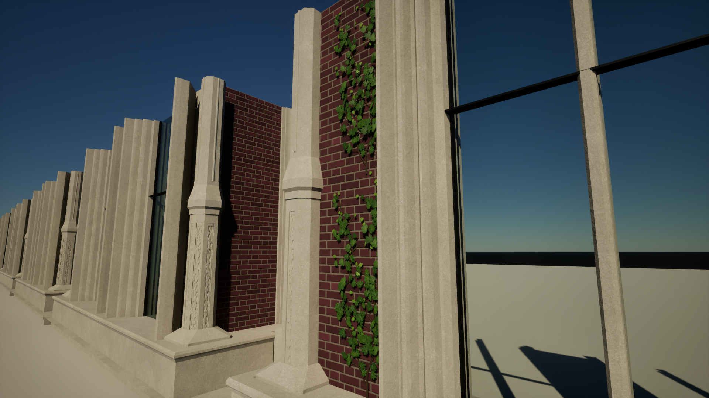
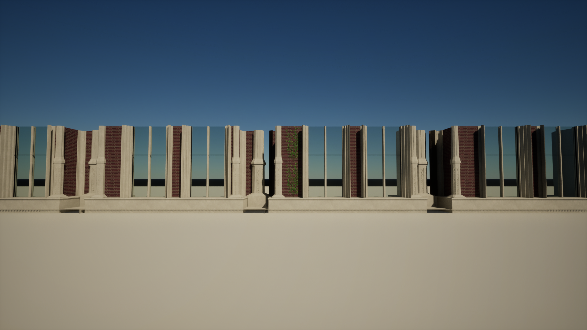
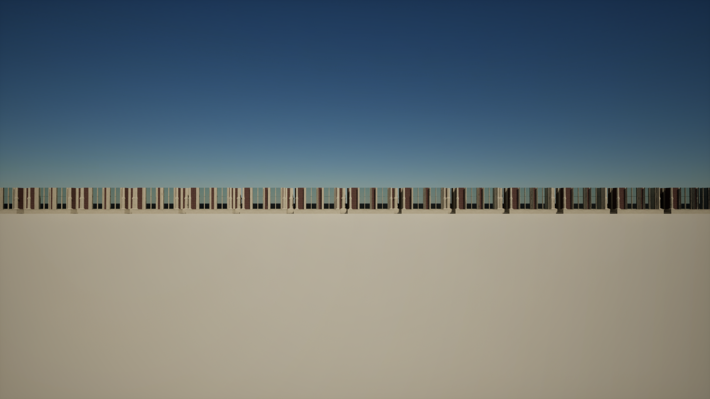
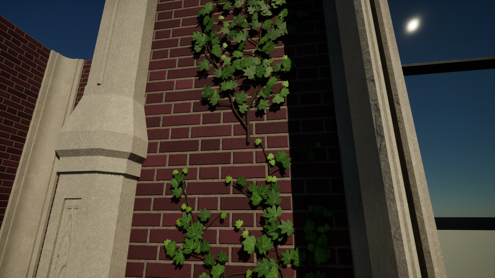
Baseline and stress configurations, all five views
A/B/C/D use identical 32-bay facade geometry. Ivy counts are 0 / 2 / 64 / 128. C and D are documented stress setups, not a prediction of the full hotel.


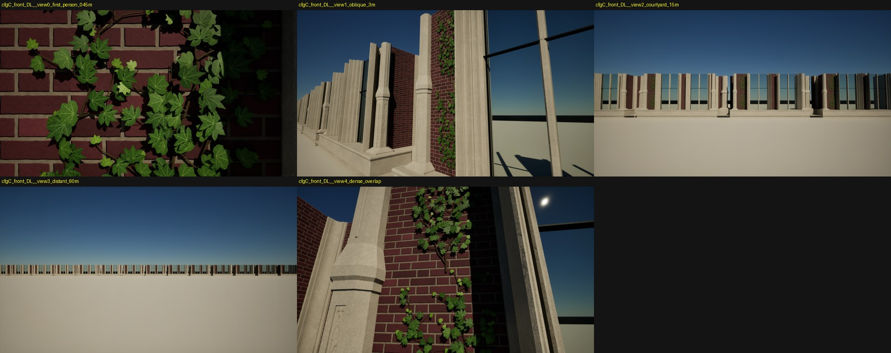

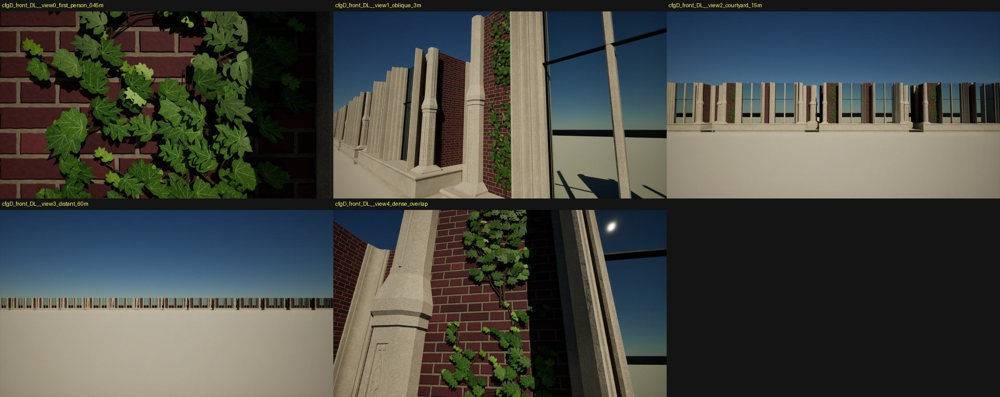
Reference, materials and Preserve Area

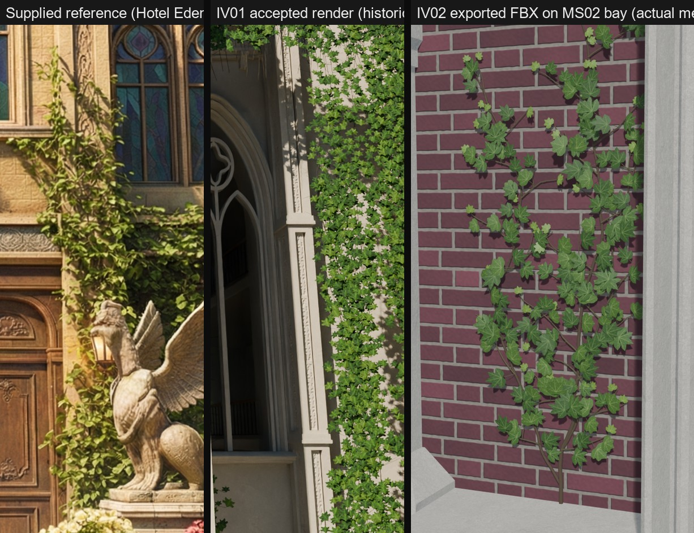

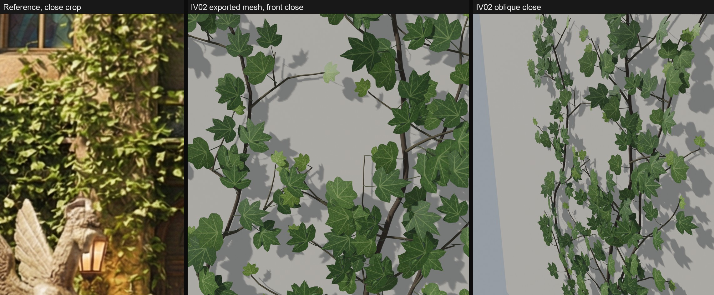
These reference comparisons are retained source QA. They do not substitute for the Unreal views above or Jason’s visual verdict.
Distance retention
The corrected temporal review found that Preserve Area helps distant ivy survive: at 15 m, 5,581 ivy-green pixels without it versus 9,344 with it; at 60 m, 18 versus 1,043 (each subtracts the matching no-ivy baseline). Without it, the distant ivy is nearly absent. All timing runs used Preserve Area off. The retained performance data does not establish the cost of the better-retaining variant.
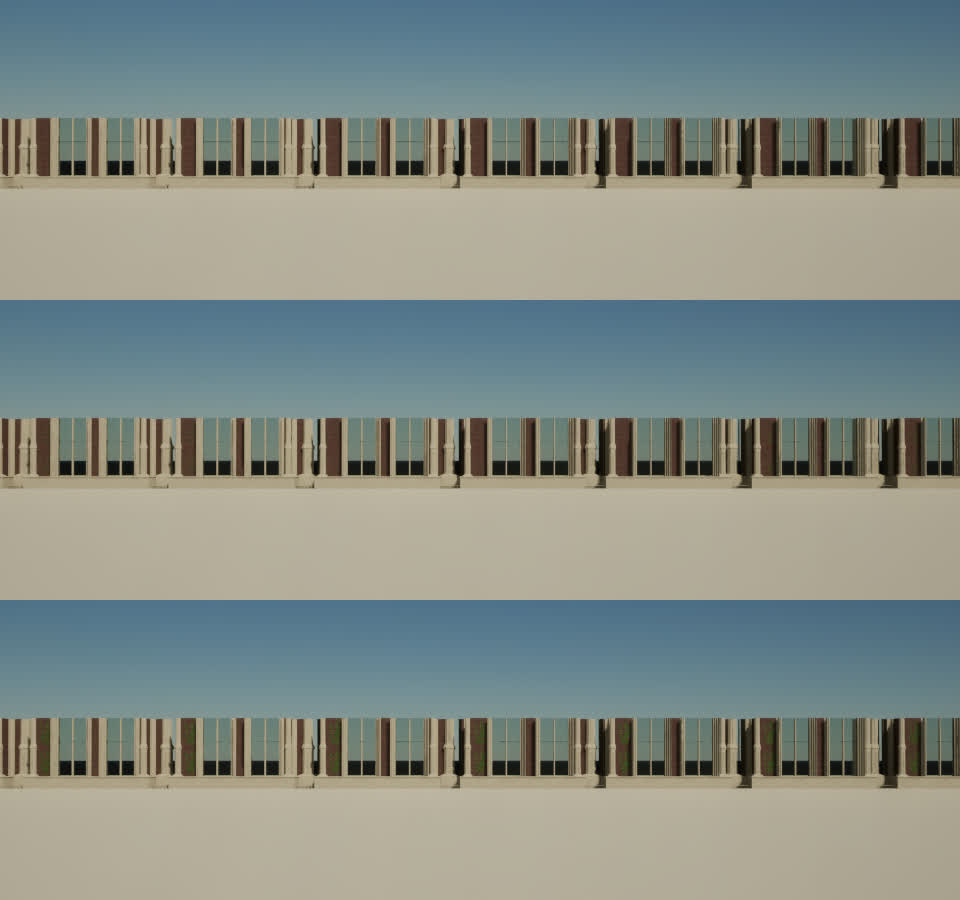
Repeatable camera route · 44 seconds
Preserve Area off/on side by side. This 1920×540 review proxy is encoded from the original 3840×1080 capture; it is for playback, not pixel measurement. Original evidence remains at Saved/IV02/runs/video_cfgC_PA_side_by_side.mp4. Download review video.
The independent reviewer found no obvious discontinuity in the inspected close/mid-range strips; that does not certify every video frame. The last frame cuts to a fixed camera after the route ends. Retention and temporal limitations are documented in the complete Unreal report.
Front/back/local-light material comparisons
Opaque Default Lit and Two Sided Foliage were difficult to distinguish on this wall-backed patch. Two Sided Foliage adds 14 pixel instructions and was not separately timed. Its transmission is an artistic approximation. Both use the installed Substrate-enabled project’s supported legacy shading route.

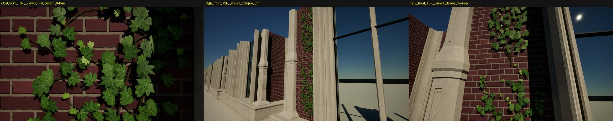

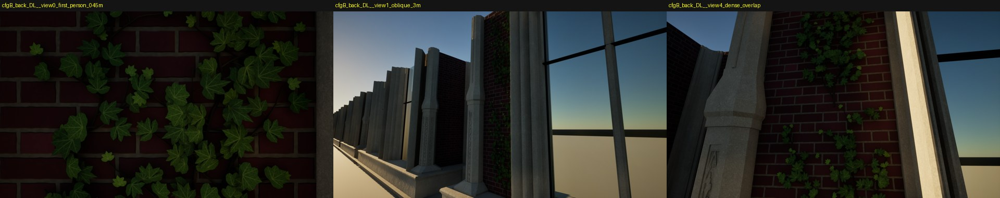


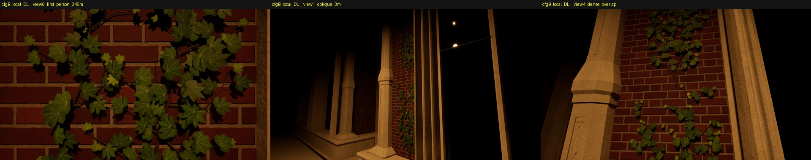

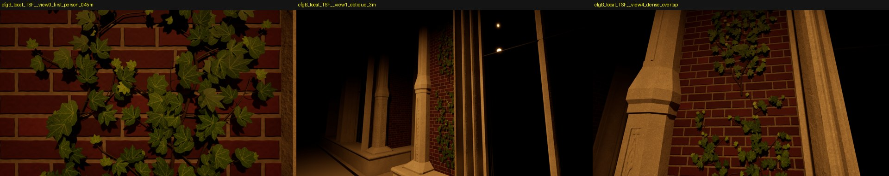
Overdraw, real shadows and temporal review sheets
The dense second ivy layer creates overlap hotspots. No zero-overdraw claim is made. The sun uses actual mesh VSM shadows; local MegaLights use their separate ray-traced shadow route. Simplified shadow casters were not justified by the measured VSM cost.

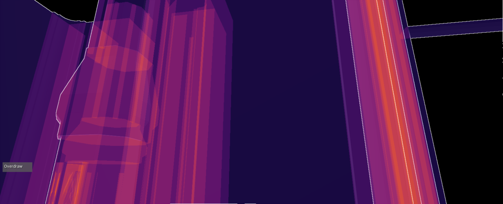

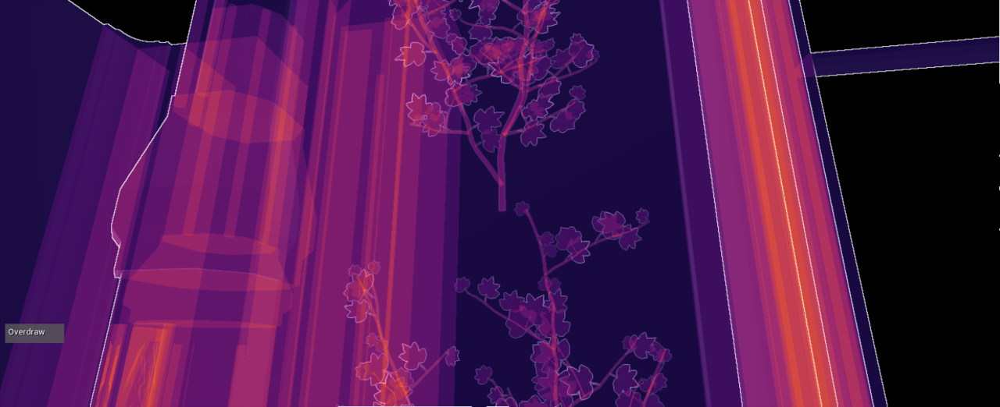

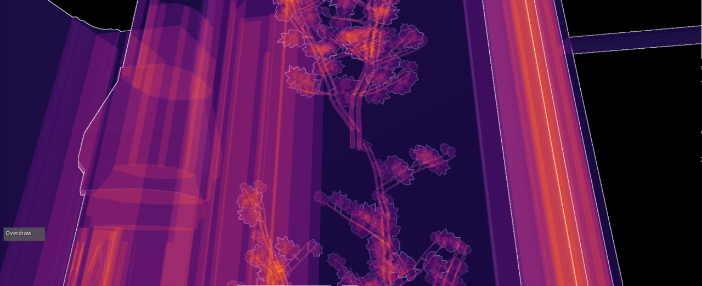

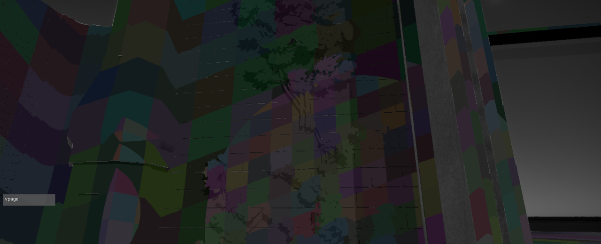

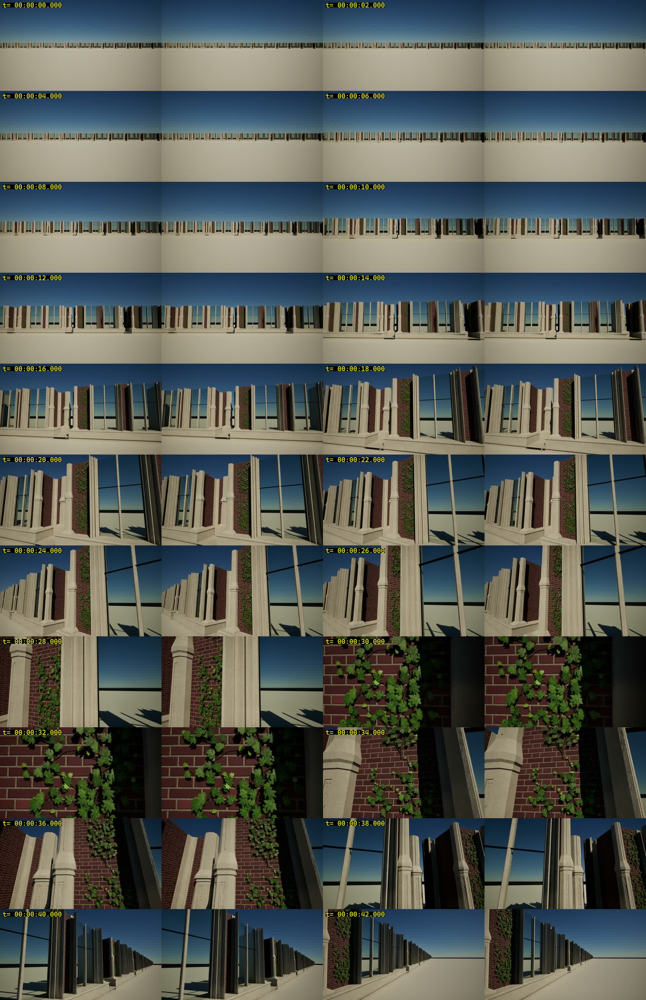
Measured workstation performance
RX 7900 XTX workstation data; render-thread bound. UE 5.8.4-58902052, D3D12/SM6, Ryzen 9 7900X, 64 GB RAM, AMD driver 32.0.21042.62. This measured build differs from the original 5.8.2 preflight.
Standalone Game, uncooked Development; editor closed for timing. Output 1920×1080; High scalability, TSR, read-back screen percentage 100%, dynamic resolution off, VSync/frame cap off. Default Lit, front lighting, Preserve Area off. Three independent A–D repetitions; each steady view has a 30 s warm-up and 120 s capture. Separate first-use and warm traversal captures retain hitches. The scalability preset’s resolution-quality value was 87 while screen percentage read back 100; exact settings and limits are retained in the report and manifests.
Below: nearest-rank percentiles pooled from raw frames across three repetitions. Median range measures run-to-run variation. Deltas pair the same view/repetition with A; they are milliseconds, not FPS. CPU/GPU times overlap and are not summed.
First-person inspection · 0.45 m
| Config (ivy instances) | Frames | Frame p50 ms | Frame p95 ms | Frame p99 ms | GPU p50 ms | Run median range ms | Δ frame p50 ms, runs 1/2/3 | Δ GPU p50 ms, runs 1/2/3 |
|---|---|---|---|---|---|---|---|---|
| A · Baseline (0) | 74030 | 4.811 | 5.573 | 6.014 | 3.391 | 0.010 | — | — |
| B · One bay (2) | 71609 | 4.986 | 5.726 | 6.154 | 3.611 | 0.018 | +0.175 / +0.171 / +0.182 | +0.231 / +0.219 / +0.210 |
| C · 32-bay stress (64) | 71255 | 5.014 | 5.769 | 6.222 | 3.642 | 0.015 | +0.205 / +0.196 / +0.208 | +0.262 / +0.254 / +0.238 |
| D · Heavier stress (128) | 70159 | 5.094 | 5.827 | 6.283 | 3.730 | 0.006 | +0.286 / +0.283 / +0.282 | +0.342 / +0.347 / +0.329 |
Other steady viewpoints
Oblique · 3 m
| Config (ivy instances) | Frames | Frame p50 ms | Frame p95 ms | Frame p99 ms | GPU p50 ms | Run median range ms | Δ frame p50 ms, runs 1/2/3 | Δ GPU p50 ms, runs 1/2/3 |
|---|---|---|---|---|---|---|---|---|
| A · Baseline (0) | 70135 | 5.114 | 5.821 | 6.436 | 3.754 | 0.034 | — | — |
| B · One bay (2) | 69718 | 5.149 | 5.804 | 6.376 | 3.792 | 0.021 | +0.021 / +0.038 / +0.044 | +0.031 / +0.052 / +0.033 |
| C · 32-bay stress (64) | 69195 | 5.192 | 5.806 | 6.409 | 3.825 | 0.017 | +0.051 / +0.103 / +0.080 | +0.064 / +0.091 / +0.059 |
| D · Heavier stress (128) | 68831 | 5.213 | 5.858 | 6.443 | 3.841 | 0.015 | +0.089 / +0.109 / +0.098 | +0.078 / +0.101 / +0.086 |
Courtyard · 15 m
| Config (ivy instances) | Frames | Frame p50 ms | Frame p95 ms | Frame p99 ms | GPU p50 ms | Run median range ms | Δ frame p50 ms, runs 1/2/3 | Δ GPU p50 ms, runs 1/2/3 |
|---|---|---|---|---|---|---|---|---|
| A · Baseline (0) | 75598 | 4.517 | 6.684 | 8.163 | 3.289 | 0.048 | — | — |
| B · One bay (2) | 75690 | 4.495 | 6.696 | 8.200 | 3.296 | 0.021 | -0.065 / +0.004 / -0.007 | +0.002 / +0.018 / +0.002 |
| C · 32-bay stress (64) | 74677 | 4.562 | 6.806 | 8.282 | 3.337 | 0.060 | +0.011 / +0.033 / +0.090 | +0.040 / +0.060 / +0.046 |
| D · Heavier stress (128) | 75120 | 4.546 | 6.847 | 8.217 | 3.342 | 0.033 | +0.016 / +0.031 / +0.039 | +0.049 / +0.060 / +0.052 |
Distant · 60 m
| Config (ivy instances) | Frames | Frame p50 ms | Frame p95 ms | Frame p99 ms | GPU p50 ms | Run median range ms | Δ frame p50 ms, runs 1/2/3 | Δ GPU p50 ms, runs 1/2/3 |
|---|---|---|---|---|---|---|---|---|
| A · Baseline (0) | 79706 | 4.292 | 6.071 | 7.437 | 3.007 | 0.017 | — | — |
| B · One bay (2) | 79573 | 4.303 | 5.992 | 7.283 | 3.002 | 0.021 | -0.003 / +0.026 / +0.012 | -0.009 / +0.003 / -0.011 |
| C · 32-bay stress (64) | 79729 | 4.293 | 6.021 | 7.351 | 3.010 | 0.019 | -0.004 / -0.009 / +0.017 | -0.007 / +0.013 / +0.001 |
| D · Heavier stress (128) | 79014 | 4.349 | 5.981 | 7.257 | 3.009 | 0.175 | +0.022 / +0.164 / -0.004 | -0.001 / +0.010 / -0.005 |
Dense overlap
| Config (ivy instances) | Frames | Frame p50 ms | Frame p95 ms | Frame p99 ms | GPU p50 ms | Run median range ms | Δ frame p50 ms, runs 1/2/3 | Δ GPU p50 ms, runs 1/2/3 |
|---|---|---|---|---|---|---|---|---|
| A · Baseline (0) | 71494 | 5.018 | 5.720 | 6.303 | 3.657 | 0.030 | — | — |
| B · One bay (2) | 70592 | 5.084 | 5.770 | 6.355 | 3.730 | 0.007 | +0.048 / +0.076 / +0.074 | +0.064 / +0.078 / +0.078 |
| C · 32-bay stress (64) | 69930 | 5.135 | 5.785 | 6.352 | 3.762 | 0.024 | +0.092 / +0.125 / +0.136 | +0.100 / +0.107 / +0.110 |
| D · Heavier stress (128) | 69750 | 5.149 | 5.768 | 6.330 | 3.784 | 0.016 | +0.107 / +0.141 / +0.144 | +0.105 / +0.129 / +0.141 |
First-use and warm traversal measurements
First traversal after process start
| Config (ivy instances) | Frames | Frame p50 ms | Frame p95 ms | Frame p99 ms | GPU p50 ms | Run median range ms | Δ frame p50 ms, runs 1/2/3 | Δ GPU p50 ms, runs 1/2/3 |
|---|---|---|---|---|---|---|---|---|
| A · Baseline (0) | 26563 | 4.939 | 6.046 | 7.801 | 3.550 | 0.050 | — | — |
| B · One bay (2) | 26256 | 5.009 | 6.087 | 7.737 | 3.638 | 0.033 | +0.044 / +0.082 / +0.080 | +0.083 / +0.096 / +0.081 |
| C · 32-bay stress (64) | 26219 | 5.044 | 6.127 | 7.826 | 3.655 | 0.020 | +0.073 / +0.131 / +0.108 | +0.100 / +0.111 / +0.102 |
| D · Heavier stress (128) | 26068 | 5.053 | 6.057 | 7.839 | 3.690 | 0.036 | +0.109 / +0.145 / +0.088 | +0.137 / +0.142 / +0.143 |
Warm traversal
| Config (ivy instances) | Frames | Frame p50 ms | Frame p95 ms | Frame p99 ms | GPU p50 ms | Run median range ms | Δ frame p50 ms, runs 1/2/3 | Δ GPU p50 ms, runs 1/2/3 |
|---|---|---|---|---|---|---|---|---|
| A · Baseline (0) | 26945 | 4.910 | 5.954 | 7.178 | 3.547 | 0.026 | — | — |
| B · One bay (2) | 26759 | 4.975 | 5.920 | 6.995 | 3.635 | 0.035 | +0.071 / +0.082 / +0.044 | +0.090 / +0.095 / +0.080 |
| C · 32-bay stress (64) | 26749 | 4.989 | 5.912 | 7.187 | 3.655 | 0.025 | +0.057 / +0.092 / +0.089 | +0.107 / +0.108 / +0.109 |
| D · Heavier stress (128) | 26491 | 5.033 | 5.992 | 7.237 | 3.681 | 0.008 | +0.107 / +0.140 / +0.122 | +0.121 / +0.133 / +0.146 |
First-use hitches occur in every configuration, including A. Cold traversal maximum reached 47.65 ms in D. No B/C/D frame exceeded 50 ms in the delivered series; one no-ivy oblique frame reached 58.61 ms. Isolated ~30 ms frames appear across configurations. Do not attribute every hitch to ivy.
Game/render/RHI threads, Nanite and shadow pass costs
| View | Cfg | Game p50 ms | Render p50 ms | RHI p50 ms | Nanite visibility p50 ms | Nanite base pass p50 ms | ShadowDepths p50 ms |
|---|---|---|---|---|---|---|---|
| First person · 0.45 m | A | 1.175 | 4.796 | 1.621 | 0.229 | 0.223 | 0.380 |
| First person · 0.45 m | B | 1.161 | 4.973 | 1.633 | 0.245 | 0.246 | 0.387 |
| First person · 0.45 m | C | 1.173 | 4.998 | 1.619 | 0.245 | 0.245 | 0.388 |
| First person · 0.45 m | D | 1.186 | 5.084 | 1.631 | 0.259 | 0.248 | 0.379 |
| Oblique · 3 m | A | 1.161 | 5.090 | 1.696 | 0.265 | 0.170 | 0.311 |
| Oblique · 3 m | B | 1.120 | 5.127 | 1.707 | 0.268 | 0.172 | 0.310 |
| Oblique · 3 m | C | 1.147 | 5.172 | 1.683 | 0.269 | 0.171 | 0.310 |
| Oblique · 3 m | D | 1.145 | 5.194 | 1.700 | 0.270 | 0.172 | 0.304 |
| Courtyard · 15 m | A | 1.180 | 4.492 | 1.745 | 0.216 | 0.108 | 0.292 |
| Courtyard · 15 m | B | 1.160 | 4.467 | 1.740 | 0.217 | 0.109 | 0.292 |
| Courtyard · 15 m | C | 1.183 | 4.534 | 1.756 | 0.218 | 0.109 | 0.292 |
| Courtyard · 15 m | D | 1.165 | 4.512 | 1.735 | 0.217 | 0.109 | 0.291 |
| Distant · 60 m | A | 1.165 | 4.278 | 1.757 | 0.202 | 0.079 | 0.275 |
| Distant · 60 m | B | 1.158 | 4.289 | 1.760 | 0.202 | 0.079 | 0.278 |
| Distant · 60 m | C | 1.151 | 4.276 | 1.750 | 0.202 | 0.080 | 0.276 |
| Distant · 60 m | D | 1.184 | 4.338 | 1.792 | 0.202 | 0.080 | 0.273 |
| Dense overlap | A | 1.153 | 4.994 | 1.716 | 0.231 | 0.210 | 0.334 |
| Dense overlap | B | 1.124 | 5.061 | 1.725 | 0.234 | 0.220 | 0.334 |
| Dense overlap | C | 1.144 | 5.113 | 1.709 | 0.234 | 0.220 | 0.333 |
| Dense overlap | D | 1.154 | 5.129 | 1.723 | 0.235 | 0.222 | 0.327 |
The first-person cost is mainly MegaLights and the ray-tracing scene, rather than VSM depth rendering. Local VRAM was approximately 3.69 GB; paired differences of −10 to +14 MB had no consistent sign and are inconclusive. A separate VSM total/page-count counter and CPU temperature/clocks were unavailable on this route and remain N/A. The complete JSON includes per-run pass counters, streaming/memory data and all warm-up statistics.
No agreed current budget or RTX 3060 test exists. These measurements do not grant target acceptance. They also do not predict the cost of final hotel coverage, other materials, Preserve Area on or PCG.
Acceptance and remaining work
| Criterion | Status | Evidence / limitation |
|---|---|---|
| A1–A5 Blender/export | PASS — independently verified; #113 closed | Editable source, master preservation, attributes and both FBX round trips verified. · Evidence |
| B1 Unreal import | PASS — technical review | 33,516 ivy triangles; axis/UV/color/normal/slot checks. Facade opaque/glass split retained original geometry. · Evidence |
| B2 Fixture and reproduction | PASS — technical review | Saved/reopened isolated map, window/corner/ledge, stable cameras and 0/2/64/128 instances. · Evidence |
| B3 Shading/shadows/retention | Evidence reviewed; limitations retained | Preserve Area improves distant retention. Its enabled variant has not been timed. · Evidence |
| B4 Workstation performance | Verified evidence delivered | Three A–D repetitions, five steady views, separate first/warm traversals and raw profiles. · Evidence |
| B5 Target budget acceptance | NOT RUN / pending | No agreed performance allocation and no RTX 3060 run. Workstation timings do not certify the target. |
| B6 Jason visual verdict | PENDING | The prototype is ready to inspect; this report does not supply Jason’s verdict. |
| B7 Scoped delivery | Verified under IV02-r2 | Whispers delivery and complete 1,794-file hashed local index reviewed. · Evidence |
| Complete kit, PCG and hotel installation | NOT BUILT — gated follow-on | This delivery is one prototype patch and an isolated test scene. |
Independent technical review: #114 review. #113 is done / CLOSED; #114 is ready-for-human / OPEN for Jason’s visual verdict. This publishing task has not changed those states.
Evidence and reproduction
Open L_IvyPrototype in Whispers, select IV02_Benchmark, choose Configuration A–D, UsePreserveArea and StartBookmark 0–4, then Play. AutoPlayRoute runs the recorded route. Bookmark order: first person, oblique, courtyard, distant, dense overlap. The full reproduction guide includes exact run commands and settings.
- Complete Unreal delivery report
- Complete Blender delivery report
- Fixture README and reproduction guide
- Independent Blender/export review
- Independent Unreal technical review
- Copied evidence/source locations and verified hashes
- Original raw evidence index with paths, sizes and SHA-256
- Current acceptance ledger
- Original Blender packet · historical
- Original Unreal packet · historical
Original raw profiles, logs, frame dumps and route MP4s are at D:\Unreal Projects\Whispers 5.8\Saved\IV02: 1,794 indexed files, 11,460,553,184 bytes. They remain in place. The selected review copies were checked against that index; this publication did not rerun Unreal tests or rehash all 11.46 GB.
To verify the full original set from Whispers: python Content/Python/WhispersTests/IV02/build_evidence_index.py --check. Delivered game revision: fa24414542f9c99693a98b399f3ded5ffac5eb72, retaining c9b1b16 and 2b8dcfc. The copied reports and independent review identify their tested inputs.